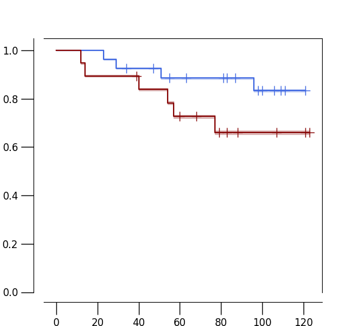

km2.test
import sys
import matplotlib
import matplotlib.pyplot as plt
import kaplanmeier as km
import pandas as pd
import numpy as np
import scipy
import scipy.stats
def read_by_roi(n):
f = open(n)
m = []
by_roi = {}
roi_to_patient = {}
race = {}
for l in f:
l = l.rstrip("\n")
ll = l.split("\t")
t_patient = ll[-2]
t_roi = ll[-3]
t_score = float(ll[-1])
t_race = ll[1]
roi_to_patient[t_roi] = t_patient
by_roi.setdefault(t_roi, [])
by_roi[t_roi].append(t_score)
race[t_patient] = t_race
f.close()
return by_roi, roi_to_patient, race
def read_samples(f_list):
agg_by_roi = {}
agg_roi_to_patient = {}
agg_race = {}
for s in f_list:
by_roi, roi_to_patient, race = read_by_roi(s + ".txt")
for t_roi in by_roi:
agg_by_roi.setdefault(t_roi, [])
agg_by_roi[t_roi].extend(by_roi[t_roi])
for t_roi in roi_to_patient:
agg_roi_to_patient[t_roi] = roi_to_patient[t_roi]
for t_patient in race:
agg_race[t_patient] = race[t_patient]
return agg_by_roi, agg_roi_to_patient, agg_race
def read_survival(n):
f = open(n)
h = f.readline().rstrip("\n").split("\t")
m = {}
clinical = {}
for l in f:
l = l.rstrip("\n")
ll = l.split("\t")
dd = dict(zip(h, ll))
m[ll[2]] = [int(dd["Status"]), int(dd["Time"])]
clinical[ll[2]] = {"age": dd["Age"], "stage": dd["Stage"], "grade": dd["Grade"]}
f.close()
return m, clinical
def collapse(by_roi, roi_to_patient, race):
scores = {}
for t_roi in by_roi:
#scores[t_roi] = np.sum(by_roi[t_roi])
scores[t_roi] = np.mean(by_roi[t_roi])
by_patient = {}
for t_roi in roi_to_patient:
t_patient = roi_to_patient[t_roi]
by_patient.setdefault(t_patient, [])
by_patient[t_patient].append(scores[t_roi])
m_new = []
for t_patient in by_patient:
#new_score = np.mean(by_patient[t_patient])
#new_score = np.max(by_patient[t_patient])
new_score = np.min(by_patient[t_patient])
m_new.append([race[t_patient], t_patient, new_score])
print(m_new[-1])
return m_new
if __name__=="__main__":
#good: 19--8, 15--2
M1 = [\
"2 CD68--9 Foxp3 CD4 CD31",\
"15 CD8a CD16 Arginase-1--9 Foxp3 CD4 CD31",\
"15 CD8a CD16 Arginase-1--6 CD45 CD4 CD45RO",\
"19 CD31--8 CD20 CD45RA CD45",\
"15 CD8a CD16 Arginase-1--2 CD68",\
"6 CD45 CD4 CD45RO--9 Foxp3 CD4 CD31",\
"14 Vimentin PLK1 PD-1--9 Foxp3 CD4 CD31",\
"15 CD8a CD16 Arginase-1--8 CD20 CD45RA CD45",\
]
#good: 5--7, then 5--9
M2 = [\
"5 PLK1 CD20 Vimentin AR pHH3--9 Foxp3 CD4 CD31",\
"5 PLK1 CD20 Vimentin AR pHH3--7 CD163 CD16 CD14",\
"17 CD14 CD152 NOS2 Arginase-1 MPO--5 PLK1 CD20 Vimentin AR pHH3",\
]
M3 = [\
"10 AR PanCK CD11c--11 pHH3 NOS2",\
"11 pHH3 NOS2--16 Ki67 PD-L1 CD152 VEGF",\
"16 Ki67 PD-L1 CD152 VEGF--20 E-Cadherin VEGF HIF1a",\
"20 E-Cadherin VEGF HIF1a--4 PanCK CD11c KIFC1",\
"11 pHH3 NOS2--17 CD14 CD152 NOS2 Arginase-1 MPO",\
]
M4 = [\
"1 MPO HIF1a GranzymeB--8 CD20 CD45RA CD45",\
"1 MPO HIF1a GranzymeB--15 CD8a CD16 Arginase-1",\
"1 MPO HIF1a GranzymeB--9 Foxp3 CD4 CD31",\
]
samples = None
sample=sys.argv[1]
if sample=="M1":
samples = M1
elif sample=="M2":
samples = M2
elif sample=="M3":
samples = M3
elif sample=="M4":
samples = M4
elif sample=="both":
samples = M1 + M2 + M3
#samples = M1 + M3
#samples = M1 + M2
#samples = M2 + M3
agg_by_roi, agg_roi_to_patient, agg_race = read_samples(samples)
m = collapse(agg_by_roi, agg_roi_to_patient, agg_race)
#print(agg_by_roi)
#sys.exit(0)
#m = read(samples)
#m = read("20 CD31 CD45RA--20 CD31 CD45RA.txt")
#m = read("13 CD31 Vimentin AR--19 PLK1 PD1.txt")
#m = read("10 CD68--12 CD16 CD163 CD68.txt")
#m = read("13 CD31 Vimentin AR--13 CD31 Vimentin AR.txt")
#m = read("12 CD16 CD163 CD68--4 Vimentin AR PDL1 PLK1.txt")
#m = read("15 CD4 CD3--15 CD4 CD3.txt")
#m = read("5 CD11c FOXP3 pHH3 ECadherin--6 HIF1a.txt")
#m = read("5 CD11c FOXP3 pHH3 ECadherin--5 CD11c FOXP3 pHH3 ECadherin.txt")
#m = read("18 Ki67 KIFC1--6 HIF1a.txt")
#m = read("18 Ki67 KIFC1--5 CD11c FOXP3 pHH3 ECadherin.txt")
#fw = open("survival.AA.all.7.txt", "w")
fw = open("survival.AA.all.module.%s.test.h" % sample, "w")
#fw = open("survival.AA.all.validated.txt", "w")
fw.write("patient\trace\tAAscore\ttime\tstatus\tgroup\tpercentile\tstage\tgrade\tage\n")
#surv = read_survival("clinical.good.txt")
surv, clinical = read_survival("clinical.good.10yr.txt")
avg = np.mean([x[2] for x in m])
#avg = -0.03
good_patient = []
time_event = []
censoring = []
y = []
all_scores = []
for x in m:
t_patient = x[1]
t_race = x[0]
t_score = x[2]
if t_patient in surv:
all_scores.append(t_score)
all_scores = np.array(all_scores)
std = np.std(all_scores)
for x in m:
t_patient = x[1]
t_race = x[0]
t_score = x[2]
if t_patient in surv:
good_patient.append(t_patient)
time_event.append(surv[t_patient][1])
censoring.append(surv[t_patient][0])
t_group = None
#t_per = scipy.stats.percentileofscore(all_scores, t_score)
t_per = (t_score - avg)/std
if t_per<-1.5:
t_per = 0
elif t_per<=0:
t_per = 1
elif t_per<=1.5:
t_per = 2
else:
t_per = 3
if x[2]>avg:
y.append(1)
t_group = "high"
else:
y.append(0)
t_group = "low"
fw.write("%s\t%s\t%f\t%d\t%d\t%s\t%d\t%s\t%s\t%s\n" % (t_patient, t_race, t_score, surv[t_patient][1], surv[t_patient][0], t_group, t_per, \
clinical[t_patient]["stage"], clinical[t_patient]["grade"], clinical[t_patient]["age"]))
else:
print("patient", t_patient, "is missing")
#time_event = [surv[x[1]][1] for x in m]
#print(time_event)
fw.close()
dx = {"time": time_event, "censoring": censoring, "group": y}
df = pd.DataFrame(data=dx)
#df = km.example_data()
time_event = df["time"]
censoring = df["censoring"]
y = df["group"]
print(df)
results = km.fit(time_event, censoring, y)
km.plot(results, cmap=[(65/255, 105/255, 225/255), (136/255, 8/255, 8/255)], title="", width=6, height=5.5, full_ylim=True, legend=0)
#km.plot(results)
print(results["logrank_P"] / 2)
plt.show()
Running Command
python3 km2.test.py bothResults
